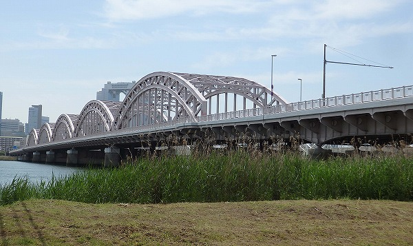
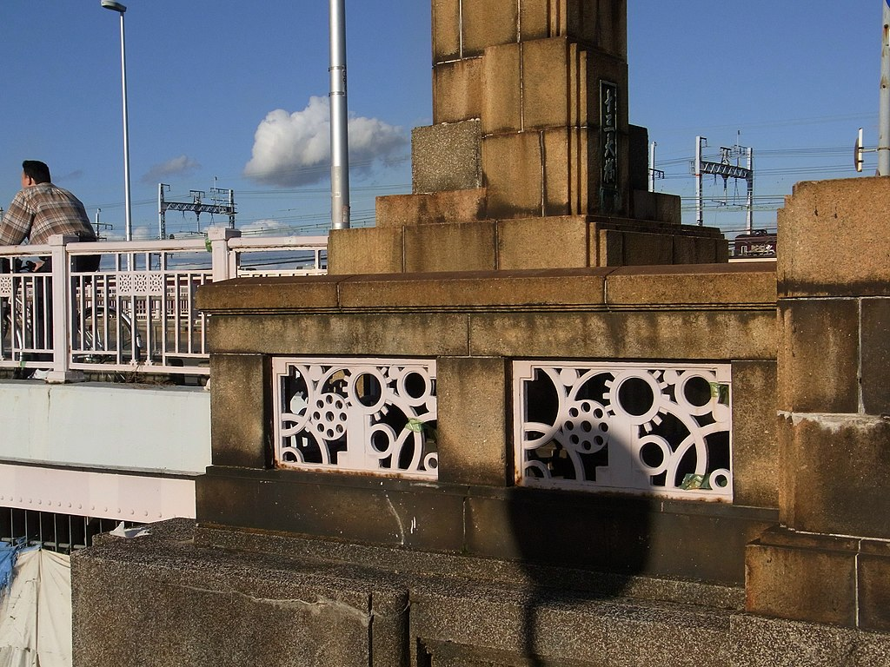

【十三大橋】歴史、アクセス、概要の解説

十三大橋は大阪市北区中津と新北野を結び、淀川に架かるアーチ橋である。 淀川河口より7.0㎞に位置する。
日本では珍しい5連のタイドアーチ橋である。
橋の中央部に路面電車を敷設することが可能な設計になっている。現在、北行き片側1車線、南行き3車線、及び
が設定されている。
概要・諸元

| 形式 |
鋼タイドアーチ、ゲルバー式鋼板桁 |
| 橋長 |
681.2 m |
| 幅 |
20.0 m |
| 着工 |
1930年（昭和5年）1月 |
| 完成 |
1932年（昭和7年）1月 |
| 設計 |
増田淳 |
歴史
「十三の渡し」がそれである。江戸時代には右岸の成小路村字十三と左岸の堀村を結んでいた。
『太平記』巻三六の記述によれば、康安元年(1361)9月にはこの付近に橋が架かっていたことがうかがえる。
1878年 - 初代十三橋が完成。中津川に木橋での架橋、成小路村13人の共同経営の私設橋として竣工。
1909年5月 - 新淀川開削で鉄橋で2代十三橋が完成。
1932年1月 - 大正時代に入り大阪市は、急激な人口増加による市域の拡大が起こり、第一次都市計画事業を策定。現在の十三大橋が完成。
1967年 - 十三大橋の迂回路である十三バイパスが完成
アクセス
阪急電鉄 中津駅 およそ600m 徒歩10分
阪急電鉄 十三駅 東口 およそ700m 徒歩11分
大阪シティバス「中津六丁目」
参考資料
十三大橋のホームページ
十三大橋のウィキペディア
北区のホームページ